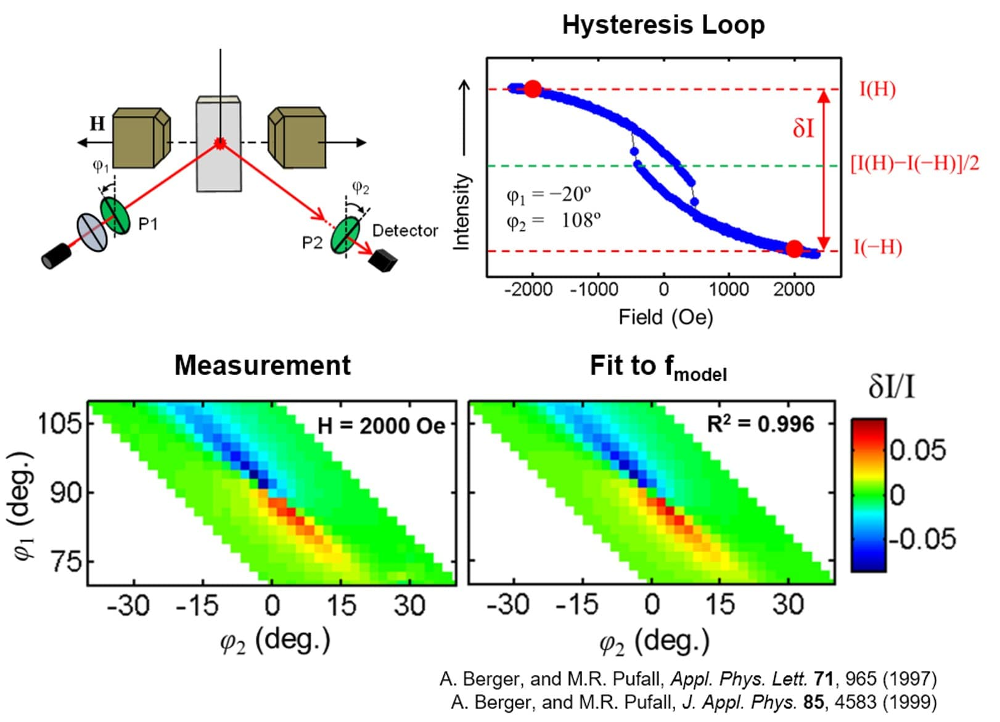

This work studies the structural and magneto-optical properties in HCP cobalt thin films. The properties of materials such as semiconductors, superconductors or ferromagnetic materials can be tuned by modifying their crystal lattice structure. Such modifications are simply the result of the quantum state of the electrons interacting with each other in a system. This behavior is described by the laws of Quantum Mechanics, that state that the superposition of their wave functions is controlled by the distances of the atoms in the crystal lattice.
Therefore, all relevant properties in materials, such as conductivity or color, can be modified by changing their atomic structure. In practice, however, making these modifications is extremely difficult, since the atoms have preferred distances and are therefore resistant to change. This is why it is so difficult to compress solids. However, there is a very elegant way to modify the interatomic distances in a solid by simply depositing a material A on a substrate of material B. This forces the interatomic distances to change. Thanks to this, the A-type atoms are forced to adapt to the atomic lattice given by B. In this sense, new materials can be fabricated with the A atoms, but with different properties, because their interatomic distances have been modified.
In this project, cobalt thin films with different interatomic distances have been fabricated. A thin film is a layer of material less than one micron (1000 nm). To achieve different interatomic distances, on the one hand, a CrRu alloy has been used as a substrate, so that the variation of the alloy concentration (i.e. the Ru content in the CrRu alloy) allows the modification of the interatomic distances of the Co film in a continuous mode. On the other hand, a bottom layer of pure Cr, varying its thickness, has also been used. In this aspect it is very important to note that the Cr bottom layer itself grows epitaxially on an Ag (silver) layer, and that this causes a tensional state in Cr, which depends on the thickness. Therefore, simply by varying the thickness of the bottom Cr layer, the lattice spacing of the atoms in the subsequently grown Co film has been modified. In other words, a series of Cr thicknesses allowed us to vary the deformation state of the Co, which also facilitated the overall experiment, because the optical constants of the bottom layer did not vary substantially.
By means of modern fabrication techniques and tools, such as the Ultra High Vacuum Sputter Deposition system, these new materials have been fabricated in a very controlled manner. In addition, post-deposition characterization techniques, specifically X-ray diffraction, have allowed the control and characterization of these new materials by measuring their interatomic distances. After the fabrication of these new materials, their optical and magneto-optical properties have been studied using the GME experimental tool, based on ellipsometry. This extremely precise instrument measures the polarization light changes, which are caused by the magnetic properties of the materials. This project focuses on the fabrication, characterization and measurement of these new materials, which are of great use in the electronics industry, especially in the magnetic memories of computers.
strain engineering of magneto-optics

Date |
Sep 2014
Technologies |
matlab
·
origin
·
latex
·
Related projects